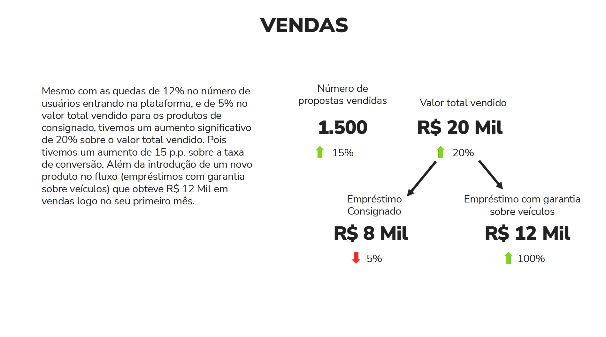

1 Introdução
Esse artigo discute o meu processo de construção de Data Storytelling dentro de um relatório mensal entregue ao Banco BMG, o qual é um dos maiores bancos comerciais do mercado brasileiro. Busco compartilhar o que aprendi nesse processo, e dou algumas dicas que possivelmente vão ajudá-lo a construir relatórios de dados mais intuitivos, claros e efetivos.
Esse processo de construção levou alguns dias de análise, reflexão, planejamento e design, mas ele também levou vários meses de testes e feedbacks, com pequenos aprendizados e ajustes. E como todo grande trabalho, ele também envolveu mais de uma pessoa.
Na época, eu tive ajuda de minha parceira de trabalho, a Andressa de Souza Freitas, e, principalmente, da UX Designer Alê Fernandes. Os conhecimentos da Alê de certa forma, revolucionaram a forma como eu construo minhas apresentações. Portanto, uma grande parte do conhecimento exposto neste artigo eu aprendi com ela ❤️.
Todos os dados, gráficos e imagens mostrados neste artigo são meramente ilustrativos. Todos os números apresentados foram gerados de forma aleatória por um computador! Portanto, eles não representam os dados reais da plataforma Blip ou do Banco BMG de nenhuma forma ou dimensão!
2 Como era esse relatório antes ?
Na época, estávamos construindo um relatório mensal contendo vários indicadores e gráficos que mostravam o estado atual e a evolução recente dos serviços e produtos do Banco BMG ofertados dentro do canal do WhatsApp.
Contudo, o formato dessa apresentação era problemático. Nós trazíamos uma quantidade monumental de informações para o banco. A apresentação usualmente trazia em torno de 40 slides diferentes, com aproximadamente 36 gráficos e 70 indicadores diferentes. Para mais, nós tentávamos apresentar todo esse volume de informações em uma reunião de apenas 1 hora.
O resultado final disso tudo era uma apresentação que trazia um volume monumental de informações, porém, que também trazia um volume muito pequeno de insights e novas ideias de negócio para os gestores. Em Figure 1 temos uma representação de um dos vários slides dessa apresentação1. Imagine que essa apresentação trazia em torno de 40 slides semelhantes a esse:

Perceba que esse slide se parece mais com uma página de um dashboard, do que de um relatório apresentando as últimas tendências do mercado ou do negócio do banco. Isso é muito importante! Se a sua apresentação traz vários indicadores diferentes espalhados pela página, sem contextualizá-los, sem relacioná-los uns com os outros, sem trazer o que eles significam em conjunto, essa apresentação vai muito provavelmente se parecer com os dashboards que você já produz para o seu cliente.
Tendo isso em mente, qual é o incentivo/motivo/razão que o seu cliente tem para assistir à sua apresentação? Em outras palavras, se a sua apresentação mostra os mesmos gráficos/indicadores que os seus dashboards apresentam, o seu cliente não tem incentivo/motivo nenhum para assistir à sua apresentação. Pois não há nada na sua apresentação que seja novo, ou nenhuma informação da qual o seu cliente não tenha já acesso diretamente.
3 Como evoluímos ?
Agora que você possui uma noção do tamanho que era o problema, nas próximas seções deste artigo, vou discutir como nós utilizamos data storytelling para evoluir esse modelo de apresentação para algo melhor, algo que desse maior clareza e impacto para o nosso cliente.
3.1 Data Storytelling não é sobre escolher “o melhor gráfico”
A maioria dos analistas e cientistas entendem o que é “data storytelling”. No entanto, alguns poucos analistas entendem “data storytelling” apenas como um problema de visualização, ou, como a ciência de “escolher os melhores gráficos” para sua apresentação, ou como projetar gráficos inovadores, bonitos e complexos.
Para esses analistas, eu digo: “a visualização é um aspecto importante dessa matéria. Contudo, data storytelling é sobre contar histórias. Não sobre visualização”. Sim! Escolher a visualização certa, torná-la melhor, mais bonita e mais limpa é muito importante sim! Porque isso vai ajudar você a se envolver com um público maior, e a contar sua história de uma maneira mais clara e eficaz.
Portanto, data storytelling é sobre criar histórias com dados, e a visualização de dados é apenas uma ferramenta para entregar essas histórias de maneira eficaz. Nós escolhemos o “melhor gráfico” para entregarmos nossas histórias, nossas conclusões e nossas recomendações aos nossos clientes da melhor forma possível.
3.2 Uma guerra constante pela atenção
Quando estamos apresentando algo, estamos constantemente batalhando pela atenção dos nossos espectadores. Essa é uma batalha difícil, não apenas porque nós podemos (sem querer) atrair a atenção para os lugares errados, mas também porque existem muitas fontes de distração no mundo moderno (e.g. celulares, emails, etc.)!
Boa parte do sucesso em data storytelling depende de você contar uma história cativante, que consiga capturar a atenção de seus espectadores. Por isso, as próximas seções vão focar bastante em dicas que contribuam para essa captura, ou que te ajudam a não dissipar, reduzir ou atrapalhar a atenção desses espectadores.
3.3 Evite textos longos em seus slides
Tente ser parsimonioso nos seus slides. Isto é, tente incluir o mínimo possível de informação dentro dele, e, em geral, evite incluir textos muito longos em seus slides. Veja o slide em Figure 2 como exemplo. O problema principal desse slide, é que ele divide muito a atenção de seu espectador.

Ao apresentar esse slide, os seus espectadores tem que prestar atenção na sua voz, no que você está comunicando verbalmente, e, ao mesmo tempo, prestar atenção também no conteúdo do slide. Contudo, esse longo parágrafo no canto esquerdo do slide é problemático. Pois ele chama atenção demais!
Esse elemento desperta tanto a nossa curiosidade, que ao ver o slide acima, você (leitor) provavelmente tentou ler esse texto longo antes mesmo de ler o que estou descrevendo agora neste parágrafo. O mesmo vai acontecer com os espectadores de sua apresentação. Ou seja, os seus espectadores vão imediatamente tentar ler esse parágrafo longo.
Contudo, ler e interpretar um texto longo, exige muita atenção. Como resultado, enquanto os seus espectadores leêm esse texto longo presente no slide, eles não vão conseguir prestar atenção em outros elementos de sua apresentação. Por exemplo, na sua fala. Isso pode ser crucial, pois talvez você traga uma informação a mais, ou uma conexão extremamente importante na sua fala, e eles podem acabar perdendo isso enquanto estão lendo.
3.4 Entregue sua história aos poucos
O cérebro humano consegue processar uma quantidade limitada de informações de uma vez só. Como resultado, se você tentar explicar várias informações para os seus espectadores, em um único slide, eles vão acabar atingindo esse limite, e simplesmente não vão conseguir raciocinar, compreender ou assimilar o que você está explicando.
Portanto, entregue a sua história aos poucos. Evite condensar várias informações em um único slide! Divida o conteúdo em partes, e explique uma parte de cada vez! Apenas para fornecer um exemplo bobo sobre isso, vamos analisar o slide mostrado em Figure 3.

Nós já vimos em Section 3.3 que precisamos sempre evitar textos longos em nossos slides. Portanto, uma melhoria imediata que podemos fazer no slide acima seria simplesmente retirar os textos e incorporá-los à nossa fala. O resultado dessa ação está em Figure 4.

Apesar do resultado em Figure 4 estar um pouco melhor, ainda temos muito conteúdo a ser apresentado e descrito em um slide só. Você pode verificar isso, ou ler os parágrafos longos que removemos do slide em Figure 3.
Temos vários efeitos sendo descritos ao mesmo tempo nesses parágrafos: 1) queda na volumetria; 2) aumento nas vendas; 3) aumento na taxa de conversão; 4) melhoria na taxa de sucesso de API; Qual desses vários efeitos é o principal resultado? Em outras palavras, qual desses efeitos é o que mais interessa os gerentes que estão assistindo à sua apresentação? Como esses efeitos estão correlacionados? Porque esses efeitos ocorreram?
São muitas informações sendo descritas em um único slide, e como resultado, muitas dúvidas surgem dessas informações. Certamente o aumento sobre as vendas é o efeito que mais interessa os gerentes que estão assistindo a sua apresentação, porém, a atenção sobre esse efeito está dissipado em meio a tantos efeitos sendo descritos ao mesmo tempo.
Uma estrutura melhor para esse slide seria forcarmos nossa atenção primeiro no efeito mais importante de todos. Ou seja, deveríamos montar um único slide que mostre claramente o aumento sobre as vendas. Depois, nos próximos slides, podemos relacionar os outros indicadores a esse aumento. Isto é, utilizar esses outros indicadores para explicar como esse aumento nas vendas ocorreu.
4 Modelo dos quatro C’s
O modelo dos quatro C’s se refere a essas quatro palavras:
Contexto, Conflito, Consequência, Conselho.
Footnotes
Vale relembrar que os números e gráficos apresentados nessa imagem são meramente ilustrativos, e, foram definidos de forma completamente aleatória.↩︎